Abstract
Human preference is now central to the evaluation, guidance, finetuning, and ranking of text-to-image models. However, the susceptibility of human preferences to bias in image generation remains underexplored. We identify a key observation: for human faces, perceived attractiveness overrides image quality in preference judgments, even when comparing real photographs of comparable fidelity. In a controlled user study, annotators rank more attractive faces as higher quality, even when unattractive real faces are compared with attractive AI-generated ones. We examine the downstream consequences of this bias. Firstly, simulating Elo rankings from user study data shows attractiveness can distort a leaderboard's ranking, elevating synthetic attractive faces over real, unattractive ones. Secondly, the same bias reappears in the human preference models. Editing 40 annotated facial attributes in isolation, we find that attractiveness is the strongest correlate of score for four of five human preference models (PickScore, MPS, HPSv2.1, HPSv3), and the strongest predictor of score in regression analysis. We further show that preference aligned generation shifts faces toward younger, more feminine faces, and can override explicit prompts for unattractive faces, thereby limiting user control. Finally, we explore mitigation strategies, both for data collection and post training on human preference models. These findings highlight the need for preference models that disentangle image quality from human cognitive bias, enabling more reliable evaluation.
User Study
47 participants were shown sets of four faces described as "AI generated". They first ranked the faces, then rated each face's attractiveness from 0 to 100. In fact, half of the faces were real CelebA-HQ photographs, so differences in image fidelity cannot explain the rankings. Participants were given one of two instructions: rank by image fidelity/quality, or rank by aesthetic preference.
- Attractiveness biasMore attractive faces are ranked higher, even when both faces are real. This holds under both instructions (Wilcoxon signed-rank with Holm correction: p = 0.0018 for fidelity, p = 0.0006 for aesthetic).
- Instructions matter, but don't fix itThe bias is stronger with aesthetic wording. Asking about fidelity reduces it but does not remove it (Mann–Whitney U: p = 0.028).
Results
Human preference models reward attractive faces
A Diffusion Autoencoder edits each of CelebA-HQ's 40 facial attributes in isolation, at a range of strengths. We then measure the correlation between each reward model's score and the strength of each edit.
| Attributes most correlated with reward score | |||||||||||
|---|---|---|---|---|---|---|---|---|---|---|---|
| Reward model | Pref.? | 1st | 2nd | 3rd | 4th | 5th | |||||
| Aesthetic | ✗ | Blond Hair | 0.37 | Pointy Nose | 0.35 | Earrings | 0.34 | Arched Brows | 0.32 | Mustache | −0.31 |
| CLIP | ✗ | Heavy Makeup | −0.33 | Bushy Brows | 0.33 | Lipstick | −0.31 | Male | 0.28 | Necklace | −0.27 |
| ImageReward | ✓ | Narrow Eyes | −0.39 | Necklace | −0.34 | Bushy Brows | 0.32 | Attractive | 0.30 | Mouth Open | −0.27 |
| PickScore | ✓ | Attractive | 0.64 | Young | 0.56 | Oval Face | 0.55 | Arched Brows | 0.52 | Lipstick | 0.51 |
| MPS | ✓ | Attractive | 0.49 | Pointy Nose | 0.49 | Chubby | −0.46 | Double Chin | −0.35 | Arched Brows | 0.32 |
| HPSv2.1 | ✓ | Attractive | 0.68 | Chubby | −0.58 | Oval Face | 0.49 | Bushy Brows | 0.48 | Rosy Cheeks | 0.41 |
| HPSv3 | ✓ | Attractive | 0.52 | Oval Face | 0.47 | Chubby | −0.45 | Bushy Brows | 0.38 | Young | 0.37 |
The five attributes with the largest absolute correlation with each model's score. "Pref.?" marks models trained on human preference data; Aesthetic and CLIP are non-preference controls.
- Attractive is the #1 attribute for 4 of 5 human preference models.
- The non-preference controls show no such pattern, so the bias comes from preference alignment.
- ImageReward, whose annotation focused on fidelity, is the least affected.
Leaderboards can skew too
We simulate 10,000 Elo leaderboards, as on LMArena, from the user-study votes: real faces against AI faces.
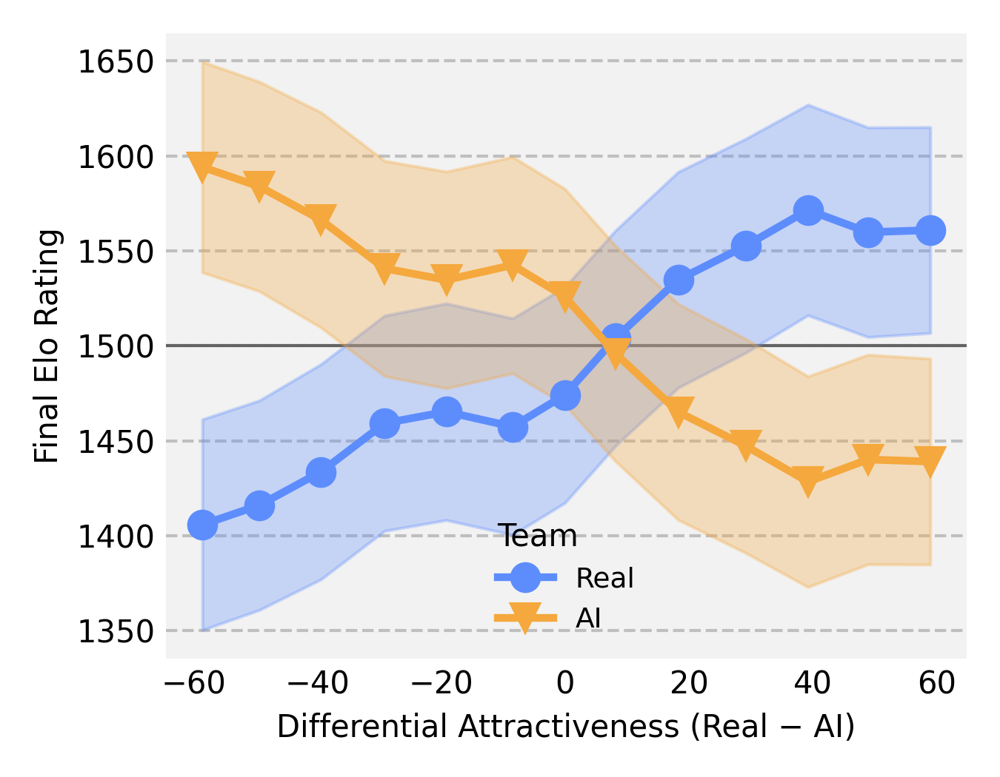
Preference-guided generation
ReNO with HPSv2.1 optimises the initial noise for the prompt "a photo of an unattractive face".
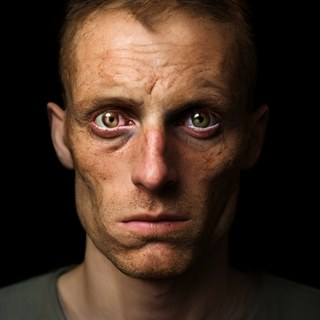
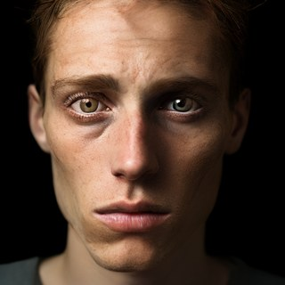
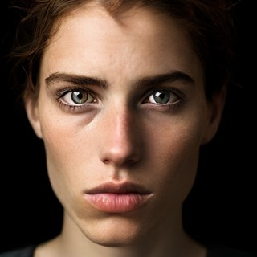
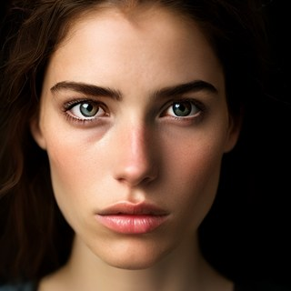
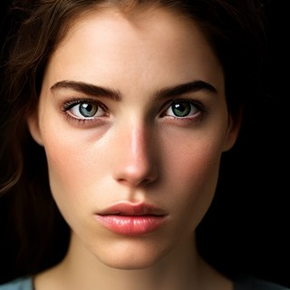
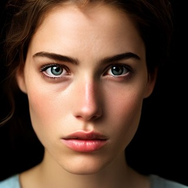
SD-Turbo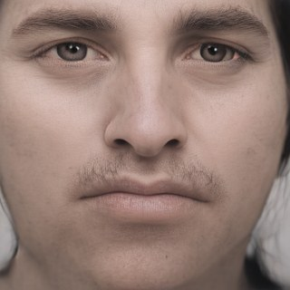
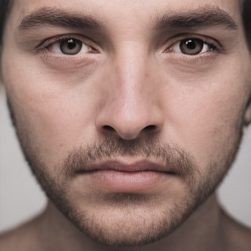
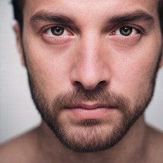
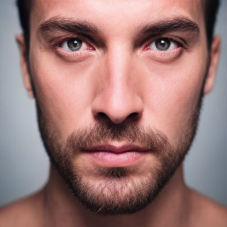
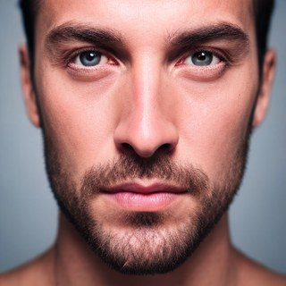
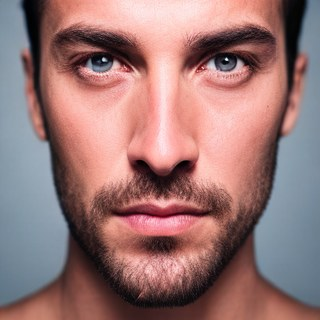
Citation
@inproceedings{mannering2027attractive,
title = {Attractive Faces Skew Text-to-Image Reward Models
and Leaderboards},
author = {Mannering, Harvey and Huang, Zhiwu and Pr{\"u}gel-Bennett, Adam},
booktitle = {Proceedings of the IEEE/CVF Winter Conference on
Applications of Computer Vision (WACV)},
year = {2027}
}